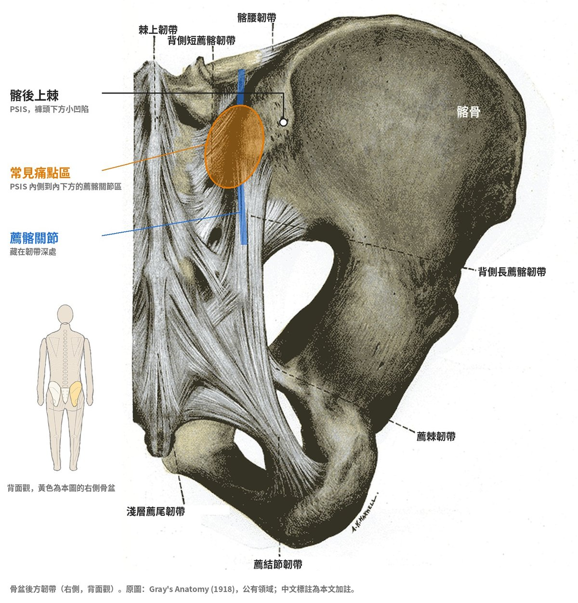

薦髂關節：常被忽略的腰痛來源
「醫師，我的腰痛在這裡。」
說這句話的時候，很多病人會伸出一根手指，指在褲頭下方、屁股上緣那個小凹陷旁邊。不是一整片，而是一個點。
接著常會問：「我是不是椎間盤突出？還是骨刺？」
在門診，看到這個「一根手指」的動作，我腦中第一個浮現的，往往是薦髂關節。它是腰臀區域最簡單、卻也最常被忽略的疼痛來源之一：位置不深、評估方式明確，但因為大家習慣把下背痛都算在「腰椎」頭上，它常常被跳過。
這篇想好好介紹這個關節：它在哪裡、為什麼會痛、怎麼和其他腰痛區分，以及中醫門診可以怎麼評估與安排治療。
一、薦髂關節在哪裡？
薦髂關節（Sacroiliac joint，SIJ）是薦椎和左右兩側髂骨接起來的地方，左右各一個。
想找它，可以摸摸褲頭下方、屁股上緣兩個對稱的小凹陷，那裡就是髂後上棘（PSIS）。薦髂關節就藏在這個骨頭突起的內下方。

它的工作很單純，卻很吃重：把上半身的重量，轉交給骨盆與雙腿。
這個關節活動角度非常小，主要靠周圍強壯的韌帶（例如背側薦髂韌帶）綁緊，再加上臀大肌、臀中肌、核心肌群一起穩住。它像是房子的「轉角柱」，平常不太被注意，一旦不穩定或卡住，走路、起身、爬樓梯都會感覺到。
其實，薦髂關節本身非常穩定，正常活動只有幾度、位移以公釐計。它出問題，通常不是「骨頭跑掉」，而是力量傳遞出了狀況：負責把關節「壓緊」的腹橫肌、多裂肌、臀大肌等肌肉，出力的時機或分配不對，關節周圍的韌帶只好長期代為承受。
研究發現，徒手治療後誘發疼痛的測試可能轉為陰性，但影像上骨頭的位置其實沒有明顯改變；改變比較多的，是肌肉張力與動作控制。這也是為什麼乾針、針刀治療之後還需要搭配運動訓練的理由。
二、為什麼會痛？
薦髂關節痛，多半不是單一原因，而是「受力不平均」加上「穩定度不足」。門診常見的情境有幾種：
- 跌坐、撞擊：滑倒時屁股著地、車禍衝擊，力量直接傳到骨盆後方。
- 反覆彎腰搬重物：前傾出力時，薦髂關節和周圍韌帶一直被拉扯。一次沒注意用力方式，就可能拉傷。
- 懷孕與產後：懷孕期間韌帶會變得比較鬆，骨盆受力也改變，產後抱小孩、餵奶姿勢固定，薦髂關節更容易累積負擔。
- 長短腳、單側承重：習慣三七步、單腳站、翹同一隻腳，或下肢長度、足部結構左右不對稱，骨盆一邊被壓得比較多。
- 臀部肌群失能：臀中肌、臀大肌沒力，骨盆少了「腰帶」，關節只好硬扛。這常和久坐、少運動有關。
- 腰椎手術後：腰椎下段固定後，原本由腰椎分擔的動作，部分會轉移到薦髂關節。
典型的痛法：
- 痛點在 PSIS 附近，病人可以用一根手指指出來，很少痛在脊椎正中線。
- 常合併屁股痛，有時延伸到鼠蹊部或大腿後外側，少數會到小腿。
- 從椅子站起來、久坐後起身、爬樓梯、單腳站（例如穿褲子）時特別明顯。
- 腿部可能有痠麻感，但分布通常不像神經根壓迫那樣「一條線」。
三、和其他腰痛怎麼分？
下背痛的來源很多，症狀常常互相重疊。下面是門診最常需要一起比較的幾種：
| 問題 | 痛在哪裡 | 什麼時候比較痛 | 腿部症狀 |
|---|---|---|---|
| 薦髂關節 | PSIS 附近，一根手指指得出來，偏單側 | 由坐到站、爬樓梯、單腳站 | 可延伸到臀部、大腿後外側，分布不規則 |
| 腰椎小面關節 | 脊椎兩側，靠近中線 | 後仰、轉身 | 通常不明顯，少數到臀部 |
| 椎間盤突出 | 腰部，常是腿比腰痛 | 前彎、久坐、咳嗽打噴嚏 | 沿神經走向「一條線」放射，可能麻木無力 |
| 深臀症候群（含梨狀肌） | 屁股中間、偏深處 | 久坐、髖關節內旋 | 大腿後側痠麻 |
| 髖關節問題 | 鼠蹊部為主，也可到臀部 | 走路、蹲下、盤腿 | 少見 |
實際上，這些問題常常同時存在。腰椎有退化的人，薦髂關節也可能一起出狀況；處理完一個痛點，另一個才浮現出來，也很常見。所以評估不是「選一個答案」，而是找出現在最主要的疼痛來源。
反過來說，也有不少看起來像薦髂關節的痛，其實來自腰椎下段（L5–S1）。和合作的物理治療師討論時，我們都有同樣的觀察。所以評估的第一步，往往是先把腰椎排除。
四、門診怎麼評估？
薦髂關節痛沒有單一一項檢查可以確診，X 光也常常看起來「還好」。所以評估靠的是幾個線索拼起來。
1. 問診與「一根手指」
請病人指出最痛的位置。如果痛點落在 PSIS 附近、偏內下方約一指寬內，而且指得很精確，臨床上稱為 Fortin finger test，是懷疑薦髂關節的重要線索。若主要痛在脊椎正中線，薦髂關節的可能性就比較低。
2. 誘發試驗
做誘發試驗之前，我會先請病人做幾次重複的腰部動作。如果疼痛隨著動作往腰部中央集中，比較傾向腰椎來源，薦髂關節的可能性就低。
接著從不同方向對骨盆施力，看能不能重現病人熟悉的那個痛。我會依序做以下四項：
- 分離試驗（Distraction）：仰躺，從骨盆前方往外後推。
- 大腿衝壓試驗（Thigh thrust）：仰躺屈髖，沿著大腿往下推。
- 擠壓試驗（Compression）：側躺，從骨盆側面往下壓。
- 薦椎衝壓試驗（Sacral thrust）：趴姿，直接往下壓薦椎。
單看一項不準，兩項以上能重現熟悉的疼痛時，薦髂關節是痛源的機會才明顯提高。另外會搭配 4 字測試（FABER）、直抬腿試驗等，協助排除髖關節與神經根的問題。
3. 超音波能看到什麼
薦髂關節位置較深、骨頭包覆多，超音波看不到整個關節內部。但它可以幫忙：
- 觀察關節後方的韌帶與周圍軟組織，左右比較是否有腫脹、增厚。
- 檢查臀中肌、梨狀肌、髂腰韌帶等鄰近結構，把其他可能的痛源一起比對。
- 治療時即時導引下針，避開血管神經，讓針刀精準到達目標位置。
椎間盤、神經根等更深層的問題，超音波看不完整，必要時仍需安排 X 光、MRI 等檢查。
五、中醫有哪些工具可以處理？
從中醫的角度，薦髂關節痛屬於「腰痛」「痹證」的範疇。跌仆閃挫、反覆勞損，造成局部氣血瘀滯；年紀漸長或產後，則常合併肝腎不足、筋骨失養。
身體只有一個，治療時我不刻意區分中醫或西醫，而是依照評估結果，從下面幾個工具中挑選組合：
1. 乾針
針對臀中肌、梨狀肌、腰方肌等過度緊繃或有激痛點的肌肉，用細針直接放鬆。適合肌肉代償明顯、痛點分散在臀部周圍的情況。
2. 超音波導引針刀
當疼痛確實集中在薦髂關節後方的韌帶與關節周圍時，可以在超音波即時導引下，用針刀鬆解沾黏、刺激修復。看得到針、看得到目標，下針更精準，也更能避開血管與神經。
3. 浮針
在皮下淺層操作，搭配病人主動活動（例如由坐到站、抬腿），適合急性期疼痛明顯、還不太敢動的時候，先讓活動恢復。
4. 中藥調養
這是中醫特有的部分：藉由中藥增進身體的修復能力。依體質與病程，常用的方向包括：
- 跌坐、扭傷後瘀滯明顯：以活血化瘀、通絡止痛為主，例如身痛逐瘀湯加減。
- 反覆痠痛、腰膝無力、遇冷加重：以補肝腎、強筋骨、祛風濕為主，例如獨活寄生湯加減。
- 產後氣血虧虛：以補養氣血為主，再兼顧筋骨。
中藥須經醫師辨證後開立，請勿自行購買服用。
5. 運動處方
針灸、針刀可以先把痛降下來，但薦髂關節要長期穩定，靠的是周圍肌肉把骨盆「綁好」。重點放在：
- 臀中肌：負責單腳站時穩住骨盆，例如側躺抬腿、彈力帶側走。
- 臀大肌與髖關節伸展：例如橋式，練習用髖出力，而不是用腰硬撐。
- 核心穩定：例如死蟲式、鳥狗式，讓骨盆和腰椎在動作中保持穩定。
- 生活習慣：避免三七步、翹同一隻腳、單邊背重物；搬東西時先屈髖屈膝。
動作的選擇與強度，需依疼痛程度與評估結果調整，建議在醫師或物理治療師指導下進行。
訓練的重點不是「更用力」，而是讓腹部、背部、臀部的肌肉在對的時機一起出力，把負荷分攤出去。骨盆帶可以在疼痛期短期使用，但不建議長期依賴。
6. 和物理治療師分工合作
薦髂關節的問題，常常不只是「一個點」，而是整條動作鏈的分工出了狀況。舉例來說，打高爾夫的人如果髖關節轉不開，揮桿的旋轉力量就會集中在腰和骨盆，薦髂關節周圍長期吃力。
這類情況，我會和物理治療師分工：
- 醫師：用超音波評估痛源，以針刀、乾針處理大範圍僵硬緊繃的組織（例如臀中肌、臀小肌、臀大肌、闊筋膜張肌），搭配中藥調養，先讓疼痛下降、組織有活動空間。
- 物理治療師：評估骨盆與髖關節的活動度和動作控制，用徒手治療創造關節空間，再把訓練一步步整合回日常生活與運動動作。
雙方會依評估結果互相轉介。身體只有一個，中醫治療和物理治療不是二選一，而是在不同階段各自發揮作用。
改善結構的重要性，遠大於一直放鬆肌肉。只做治療、不做訓練，痛很容易反覆回來。
六、治療前須知
- 先確認不是需要緊急處理的問題：若有腿部明顯無力、大小便失禁或排尿困難、會陰部麻木、發燒、不明原因體重減輕、夜間持續劇痛，或有腫瘤病史，請盡快就醫，不建議先做局部治療。
- 侵入性治療有風險：乾針、針刀、浮針都可能出現局部瘀青、痠脹、短暫疼痛加劇，少數有感染、出血或暈針的可能。
- 需事先告知醫師：正在服用抗凝血藥物、有凝血功能異常、懷孕、糖尿病控制不佳、皮膚有傷口或感染，都需要事先說明，由醫師評估是否適合。
- 療程因人而異：每個人的病程、結構與生活負荷不同，改善的速度也不同，治療計畫會隨每次評估調整。
七、重點結論
- 薦髂關節位在屁股上緣小凹陷（PSIS）的內下方，負責把上半身重量傳到骨盆與雙腿。
- 典型表現是「一根手指指得出來」的單側痛點，由坐到站、爬樓梯、單腳站時加重，很少痛在脊椎正中線。
- 它常和椎間盤、小面關節、深臀症候群、髖關節問題症狀重疊，甚至同時存在，需要仔細評估才能找出現在最主要的痛源。
- 評估先排除腰椎，再靠多項誘發試驗與超音波一起判斷；超音波看不到關節全貌，但能比對周圍軟組織，並導引下針。
- 治療可結合乾針、超音波導引針刀、浮針與中藥調養；要長期穩定，需要和物理治療師合作，讓核心與臀肌在對的時機出力。
薦髂關節是最簡單、卻也常常被忽略的治療部位。反覆發作的下背痛，有時需要的不是更多休息，而是重新找一次疼痛的來源。
本文僅供醫療衛生教育參考，不能取代醫師的診斷與治療。每個人的病情、體質與治療反應不同，文中提及的治療方式並非適用於所有人，亦不保證療效；侵入性治療可能伴隨副作用與風險。如有身體不適，請尋求合格醫療專業人員當面評估。
參考文獻
- Laslett M, Aprill CN, McDonald B, Young SB. Diagnosis of sacroiliac joint pain: validity of individual provocation tests and composites of tests. Man Ther. 2005;10(3):207-218. PubMed
- Fortin JD, Falco FJ. The Fortin finger test: an indicator of sacroiliac pain. Am J Orthop. 1997;26(7):477-480.
- Cohen SP. Sacroiliac joint pain: a comprehensive review of anatomy, diagnosis, and treatment. Anesth Analg. 2005;101(5):1440-1453.
- Tullberg T, Blomberg S, Branth B, Johnsson R. Manipulation does not alter the position of the sacroiliac joint: a roentgen stereophotogrammetric analysis. Spine. 1998;23(10):1124-1128.